Model Predictive Control Professional function block application examples
The MPCPro function block provided by DeltaV PredictPro can be used to address multivariable control requirements. You can use the PredictPro application to create process models and control definitions from process data. The automated test feature of the PredictPro application allows the step response of Controlled or Constraint outputs to be determined based on changes in the Manipulated inputs. This capability can meet multivariable control requirements in all process industries. In many cases, the MPCPro function block can replace control techniques that have traditionally been used to address the control requirements of multivariable processes.
The implementation and commissioning of the MPCPro function block are far simpler and faster than traditional techniques. The MPC function block sections has an example of traditional techniques that can be replaced by the MPC and MPCPro block.
Larger and more complex applications that can benefit from MPCPro control can be identified based on your process knowledge. Use the following guidelines to determine when you should consider the MPCPro block:
The number of interactive Control parameters, Constraints or Disturbances exceed the capability of the MPC block.
The number of Manipulated parameters exceeds the number of Controlled parameters. For example, many of the process outputs are defined as Constraint parameters or there are more Manipulated parameters than the total number of Constraint and Control parameters.
You wish to maximize operating profit automatically based on the cost of feedstock and profit of final outputs. Based on this cost information and the process input and Constraint limits, the optimization capability of the MPCPro block can be used to maximum operating profit.
Feedstock cost are significant and there is some flexibility in the way the product specification can be achieved.
The execution rate of the MPCPro function block is limited to one second or slower. Therefore, MPCPro should be applied to processes where control requirements can be satisfied at these execution speeds.
Large multivariable applications
The design of many processes requires that the control strategy address multiple Controlled, Constraint, and Disturbance outputs through the adjustment of multiple Manipulated process inputs. The MPCPro function block can control processes of size 40×80, for example, a total of 40 Disturbance and Manipulated parameters, and a total of 80 Control and Constraint parameters.
To show how MPCPro can be applied to the control of a multivariable process, we will consider as an example, an oil fractionator process. This problem has been published by Shell and includes typical process dynamics with normalized inputs and output. In this example, it is assumed that the heat requirement of the column enters with the feed.The column has three product draws and three side circulating loops that remove heat to achieve the desired product separation. The heat duty associated with the bottom loop can be adjusted.The heat duty of the other recirculating loop can be measured but is determined by other parts of the plant.The specification for the top and side draws are determined by economics and operating requirements.There is no product specification for the bottom draw but there is an operating constraint on the temperature in the lower part of the column. The following figure shows the process.

From a control perspective, the process inputs and outputs can be visualized in the following manner based on the process design, available measurements, and operating requirements.

In general, it is recommended that the MPCPro block be included in a module by itself. This allows the module to be downloaded at any time. The MPCPro block can externally reference the measurements and control loops in other control loops. For simplicity, the MPCPro block has been included in the same modules as the measurements and loops it references.
The complete configuration of the MPCPro block is shown in the following figures. The setpoint limits are based on the normalized range in this example. In an actual application, these limits should be set in engineering units based on the actual range of the measurements and actuators.


After this module is downloaded, launch the DeltaV PredictPro application to commission and test the control. The PredictPro application can be launched from the Start menu or by right-clicking the MPCPro block The following figure shows the main screen of the PredictPro application as launched from the example MPCPro block.
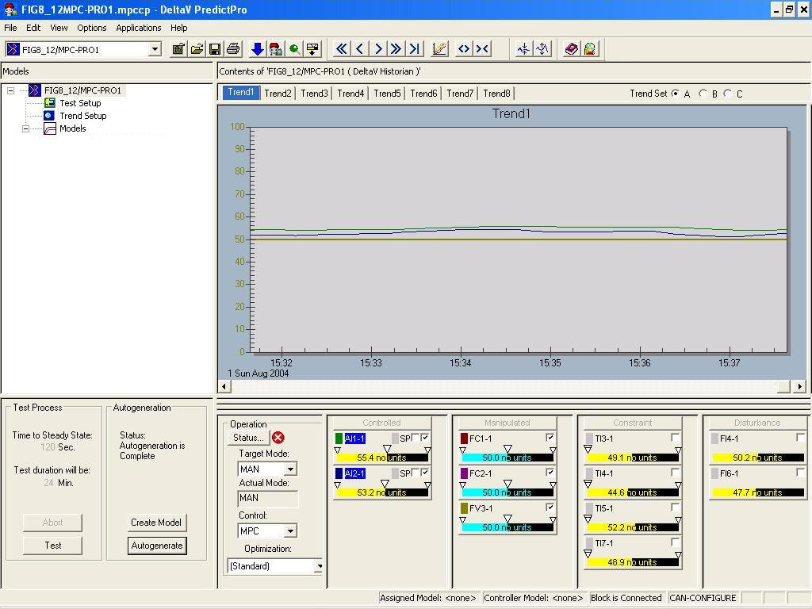
Based on the MPCPro block configuration, the Control, Manipulated, Constraint, and Disturbance parameters are automatically displayed. Notice that the Description that was configured for each of these parameters is used in the faceplate representation. For this example, the Control selection has already been changed from Local to MPC which forced the downstream blocks to automatically change their target mode to RCAS. Thus, the mode of the MPCPro block is MAN. Also, notice that some parameters are being trended. This is accomplished by clicking the faceplate check box for the parameter to be plotted.
By selecting the Setup button, the Manipulated parameters that are included in the test can be selected, as shown below.
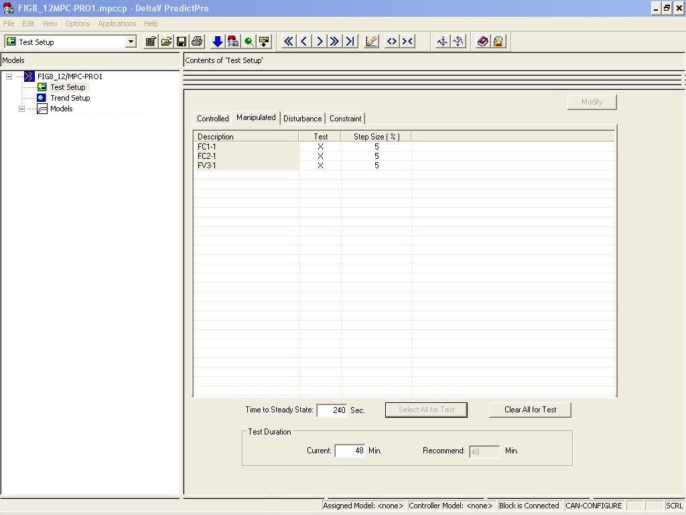
In this example, all the Manipulated parameters have been chosen for use in the automated test. Click the Select All for Test button to include all parameters. The default step size of 5 percent will be used in the test. Since all process outputs and disturbances are to be identified (the default selection), nothing more must be done in the setup other than to specify an estimated Time to Steady State. For this example, the time response of the simulated process has been time-scaled and the estimated Time to Steady State is input. Return to the application's top level view, and click the Test button to run the test. In response, the Manipulated parameters are automatically changed in a pseudo-random manner.
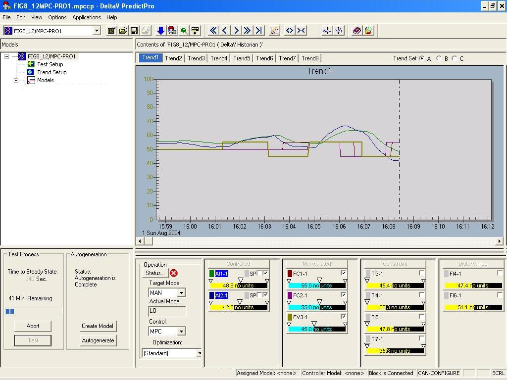
When the automated test is complete, the area of testing is automatically selected as shown in the following figure.
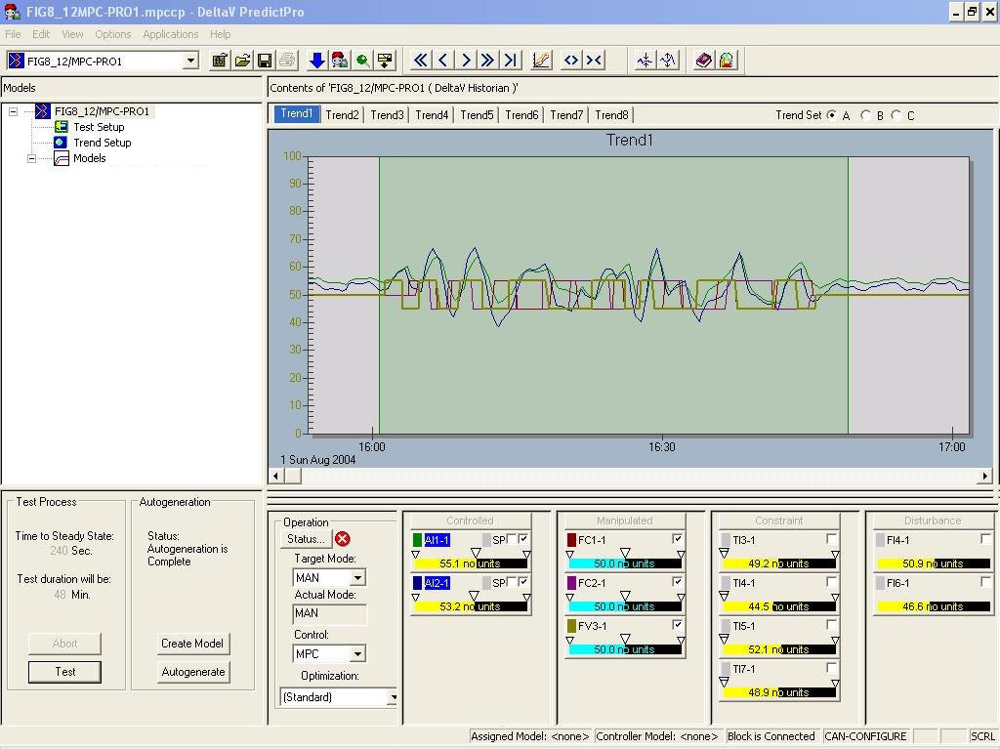
Since the process operation during the time of test was normal, all the test data will be used to generate the model. Thus, by selecting the Autogeneration button, the model and controller for the process is generated. Verification of the set response is shown below. For purposes of this example, the process response has been scaled by a factor of 100.
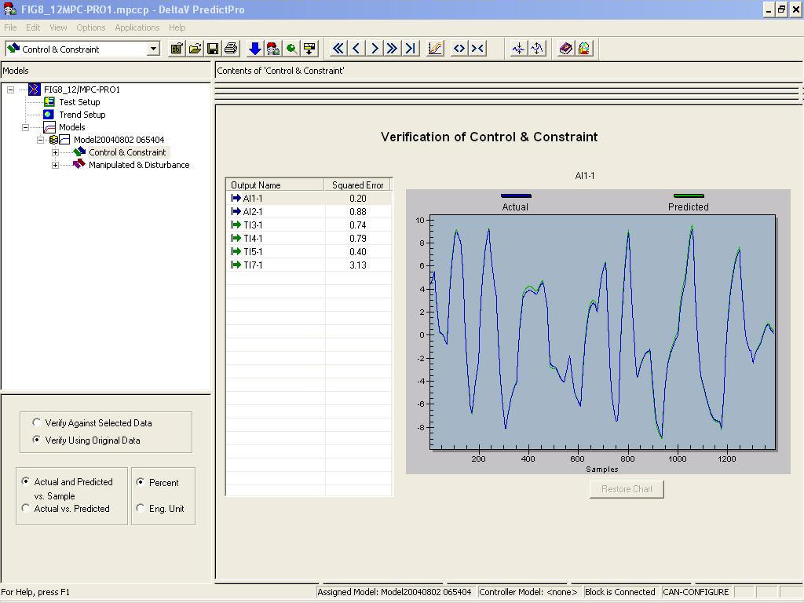
Based on the square error indicated in the verification, the model has been accurately identified. Further verification of the model can be done by examining each step response and comparing this to your knowledge of the process. An example of the Top End Point Composition is shown in the following figure.
When the Expert option is selected, an approximation of the step response dynamics is shown in the lower left corner of the screen as shown in the following image.
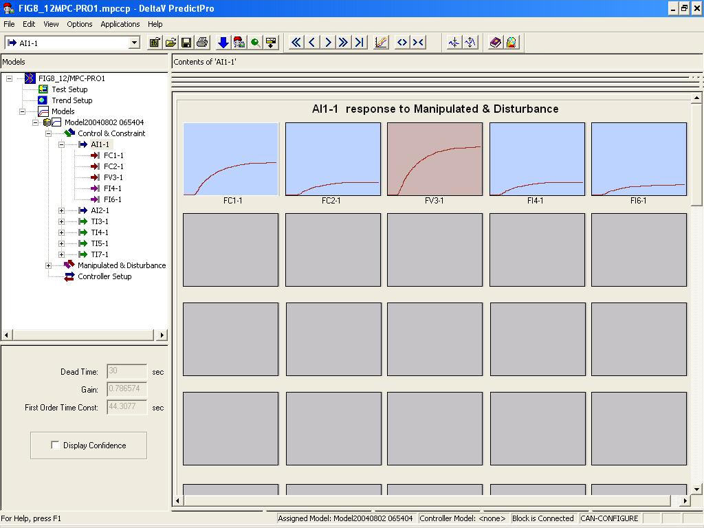
Also, further confirmation of the model can be done by comparing the FIR response to the ARX response and examining the confidence interval for one of the step responses as shown in the following figure. Select to use this command.
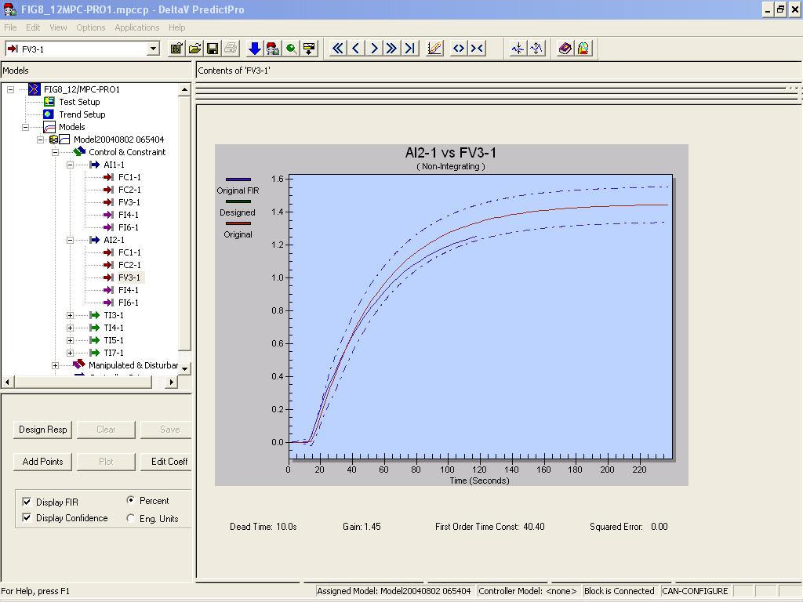
The Control or Constraint parameter that best reflects changes in the Manipulate parameter are automatically selected for use in the controller generation. The Control or Constraint parameters that have been selected are represented in different colors in the step response for each Manipulate parameter. For example, the selection for the Top Draw Flow is shown in the following figure.
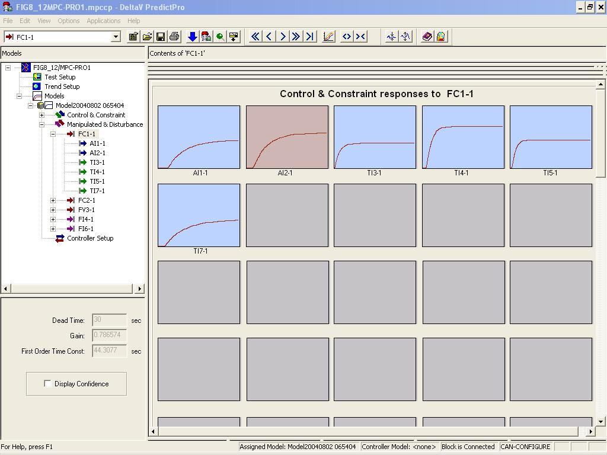
The selection of the parameters used in control is based on the parameters' impact on the condition number associated with the control matrix that is generated. Also, the deadtime and gain associated with a parameter should be considered in this selection. Preference is given to Control parameters if the performance is nearly the same as that given for Constraint parameters. You can examine the Control and Constraint parameters selected for the control generation by selecting Controller Setup in the left pane. Select to see this option. For this example, the information displayed is shown in the following figure.
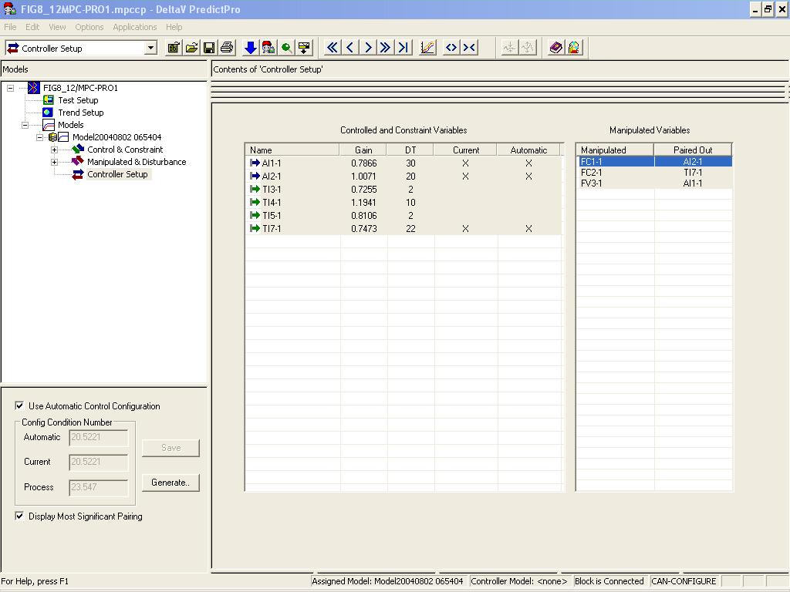
For this example, the automatic choice of parameters gives a condition number of 20.5. If the Control and Constraint parameters are highly co-linear, that is reflecting the same information, it is possible that Control and Constraint parameters cannot be selected for some of the Manipulate parameters. Also, under certain conditions, the user can choose to force this condition by removing a parameter in the selection list as shown above — if this leads to a lower condition number. Generally, better control will be provided by a lower condition number.
The Standard objective function, provided as the default for MPCPro, can be used without modification for many applications. This default objective function is designed to provide control action that maintains the Control parameters at setpoint while maintaining the constraint parameters within their operating limits. When there are extra degrees of freedom for example, the number of Manipulated parameters exceed the number of Controlled parameters as in this example, the control action attempts to maintain the current position of the Manipulated parameters. When it is predicted that a Constraint parameter will violate one of its limits, the working setpoint of the Control parameters can be automatically modified within their specified range. If there is a conflict in satisfying the constraints and operating range, then the requirement to maintain Control or Constraint parameters within their limits or control rage is relaxed for those with the lowest priority so that the remaining Control and Constraint parameters can be maintained within limits. For this application, the Standard objective function can be used. However, under certain market conditions, it can be desirable to maximize the top draw while maintaining the composition. Thus, a second objective function can be defined by selecting . The following image shows the Configure Multiple Objective Functions dialog.

In this case, the dollar profit associated with a percent change in the top and side end point composition and the top draw flow are not known or can change daily. Thus, the unit cost that is provided is used to indicate the relative value of maintaining composition versus maximizing top draw. For this objective, an objective name of MaxTopDraw is defined. Click the Operator Selectable check box for this objective to be available to the operator. Once any objectives have been defined, it is important to download the module to use these new objective functions in simulation and in on-line operation.
To test the column control off-line, select the model in the left pane and click the Simulate button. This command is available if you have selected . The following figure shows the Simulate interface for the example MPCPro block when MPCPro is in Automatic mode and the Standard objective function has been selected.
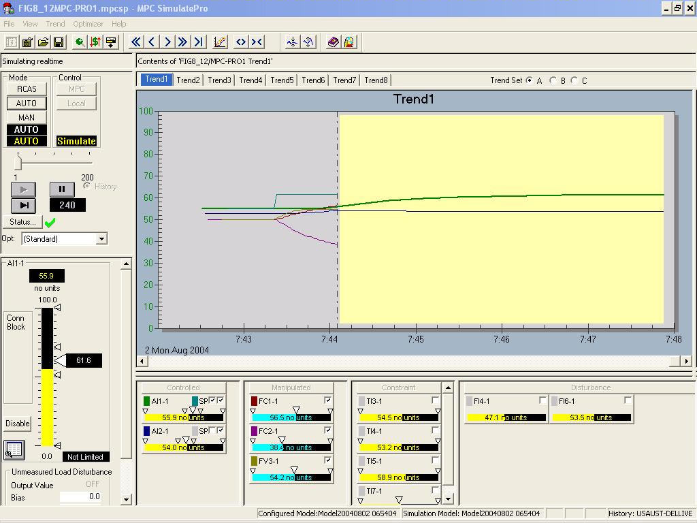
You can observe the control responses by changing the setpoint. You can also change the control objective to examine the impact on the process. For example, the impact of changing the objective from Standard to MaxTopDraw is reflected in the trend as shown in the following figure.
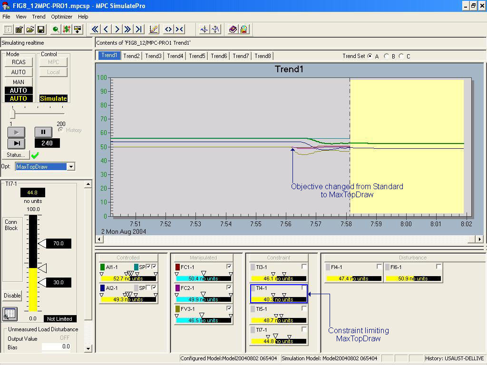
Once the MPCPro control has been verified using PredictPro's simulation environment, the module containing the MPCPro block can be put into service. The predefined dynamos for PredictPro can be included in the Operator Interface. The following figure shows an MPC Operate Pro view for this example.
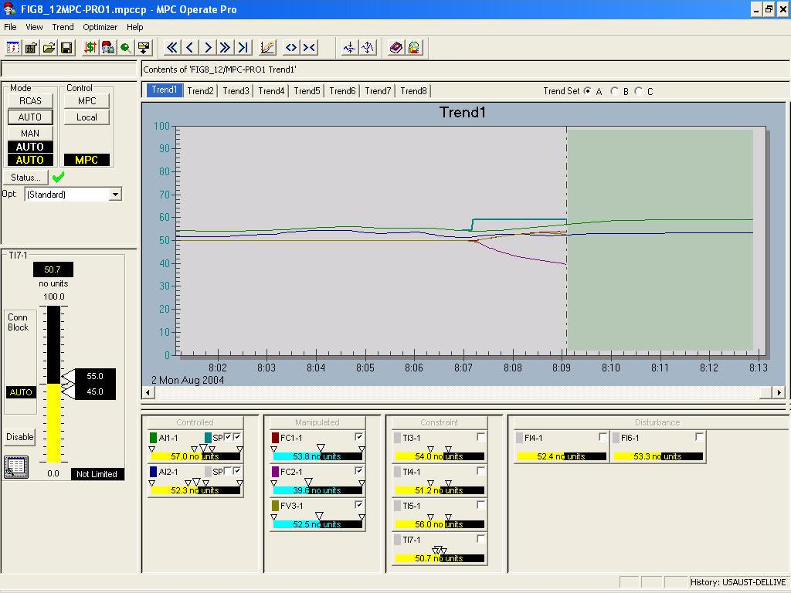